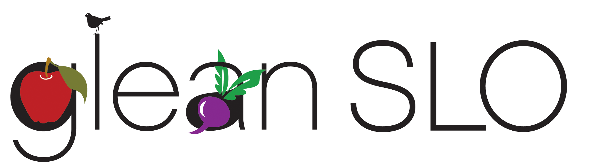

Ways to get involved...
Become a GleanerThe easiest way to get involved! Register as a volunteer and then sign up for an event on our Harvests page. Gleans are seasonal, available all over SLO county, and last about 2 hours. Gleaners are the hands and heart of our efforts to rescue nature’s bounty for the benefit of our community!
Harvest Leader
As a Harvest Leader, you will be trained and equipped to lead small groups of volunteers to harvest excess produce from homes in your area. Harvest Leaders drop off produce to a nearby food pantry, keeping the fruit as local as possible. Harvest Leaders may also co-lead farm gleans. It's up to each Harvest Leader to determine how frequently you would like to lead gleans. Harvest Leader Training occurs quarterly. GleanSLO T-shirt, equipment, harvest manual and additional supplies will be provided for each Harvest Leader. To learn more, contact Volunteer Coordinator, Emily at ewilson@slofoodbank.org.
Farmers’ Market Collection Leader
Want to get to know your local farmers AND help feed the hungry? Every week GleanSLO collects leftover produce from the SLO Thursday Night and the Templeton Saturday Farmers’ Markets. Our Collection Leaders engage with farmers, orchestrate volunteers and keep track of poundage and donation receipts. To learn more, contact Volunteer Coordinator, Emily at ewilson@slofoodbank.org.
Host a Fruit Drive
Host a Fruit Drive at your school, business or neighborhood! The Fruit Drive model is similar to a typical food drive, but the fruit being collected is gathered from trees, rather than purchased. GleanSLO provides you with a Fruit Drive Kit that includes the resources you’ll need to successfully publicize and collect hundreds of pounds of produce within yourS community. Contact Program Manager, Roxanne Sanders at gleanslo@slofoodbank.org, to learn more!
Group Volunteering
Does your community group or volunteer organization want to participate in something with an impact? Gleaning options that can accommodate large groups are limited, seasonal and not guaranteed. Email Volunteer Coordinator, Emily at ewilson@slofoodbank.org and include the size of your group, potential dates and times you are available, and any other considerations.
| Information | Show the information for volunteers about how to participate. |
| My Page | Go to the My GleanSLO page. (You must first have given yourself a password using the Update button just below.) |
| Update | Update my contact information or renew my registration. |
| Signups | Resend the reminder email for harvests I am currently signed up for. |
| Attendance | Send my harvest attendance history by email. |
| Terms | Show me the Terms of Participation as a GleanSLO volunteer. |